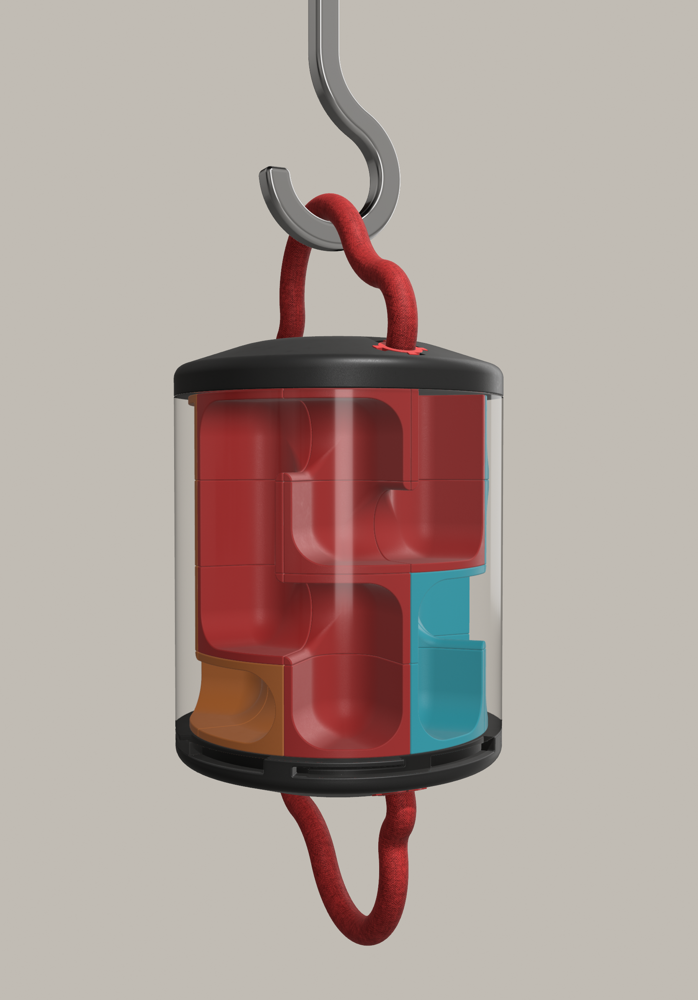

Trabajo realizado en colaboración con la fundación Rainfer, dedicados al rescate y cuidado de primates en situación de vulnerabilidad.
Gracias a una visita realizada a sus instalaciones, pudimos conocer de primera mano los distintos grupos de monos con los que trabajan y conocer sus necesidades de boca de sus cuidadoras.
